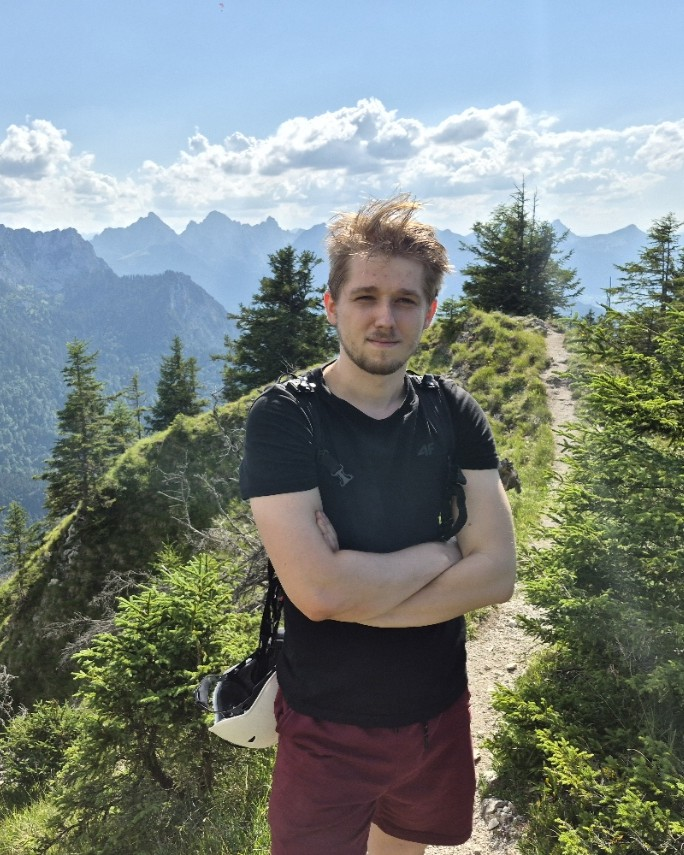
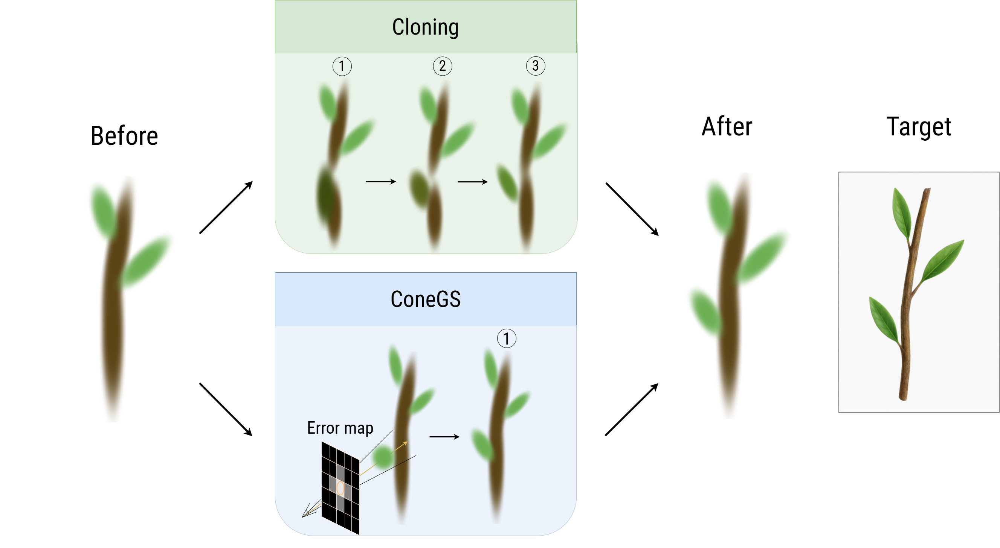

I am a PhD student at the Technical University of Munich, in the Visual Computing & Artificial Intelligence Group led by Prof. Matthias Nießner.
Interests: I am primarily interested in 3D computer vision and machine learning, with a focus on 3D reconstruction and scene understanding. My work spans autonomous vision, medical imaging, and deep learning for image and video analysis. I am passionate about developing methods that advance both fundamental understanding and practical applications in computer vision and machine learning.
Bio: I hold a master's degree in machine learning from the University of Tübingen, where I conducted research in the lab of Prof. Andreas Geiger. I completed my bachelor's degree in computer science at Lodz University of Technology. During my studies, I contributed to several research projects in computer vision, including work on autonomous systems and medical imaging. I see myself as an enthusiastic researcher and programmer. In my free time, I enjoy exploring new ideas, playing musical instruments, running, climbing, and staying active outdoors.


@InProceedings{baranowski2026conegs,
author = {Bartłomiej Baranowski and Stefano Esposito and Patricia Gschoßmann and Anpei Chen and Andreas Geiger},
title = {ConeGS: Error-Guided Densification Using Pixel Cones for Improved Reconstruction with Fewer Primitives},
booktitle = {2026 International Conference on 3D Vision (3DV)},
year = {2026},
}Website template by Michael Niemeyer